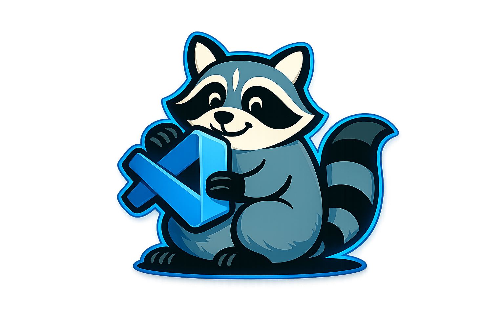

Grabby is a CLI-first system for contract-governed, AI-assisted software delivery. It standardizes intake, planning, execution, verification, and audit so teams can move quickly with clear scope control.

Grabby is a CLI-first framework for AI-assisted software development. It turns a plain-language request into a structured feature contract, then moves it through validation, planning, backlog generation, prompt bundling, approval, execution, and post-run audit. In practice, Grabby acts as a repo-local orchestration layer for coding agents: persona-based handoffs, project-specific guidance, and contract artifacts make AI work predictable, reviewable, and repeatable instead of prompt-driven guesswork.
Supported LLM services: ChatGPT, Claude, Gemini, Copilot, or any equivalent provider. Grabby is provider-agnostic.
Repo policy: this project runs in LLM-first mode, so non-workflow command families are intentionally hidden and disabled.
Grabby helps teams convert natural-language requests into auditable work artifacts and enforce deterministic workflow gates. It reduces ambiguity, improves traceability, and keeps AI-assisted implementation bounded to approved scope.
Contract Driven Agent Orchestrated Governance Enforced Repo Local# Main path: prompt Claude to draft the contract first # Then run Grabby governance and execution flow npm install -g grabby grabby init grabby init-hooks grabby validate contracts/.fc.md grabby plan contracts/ .fc.md grabby approve contracts/ .fc.md